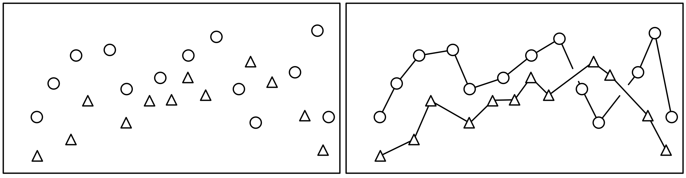

4 Look at data
4.1 Goals
You will learn about some factors that influence how you should visualize data, including your motivation for creating the visualization and how human visual perception influences what we “see” when we look at a visualization.
4.2 Introduction
We’re learning to make data visualizations, so naturally we want to make good ones. What makes one visualization good and another bad? Are there specific qualities to emulate or avoid? How can we meaningfully discuss visualization quality without emphasizing personal preferences and taste? Healy, Chapter 1 has many good answers to these questions, while recognizing that the subject is somewhat subjective.
In this lesson we will try to develop some tentative answers to the following questions:
- What can you learn more easily from a visualization than from a table of data?
- What makes a good visualization?
- What features of human visual perception should be considered when designing data visualizations?
There is much more in Healy, Chapter 1 than the highlights in this lesson. I suggest you read the chapter carefully and return to it several times throughout the course.
4.3 Problems with numerical summaries
Numerical summaries of data (e.g., mean, median, quantiles, standard deviation) are very useful but sometimes conceal more than they reveal. Discussions of financial aspects of life in the news – whether incomes, taxes, or assets often suffer from these problems because distributions of the underlying data are skewed. Its exceedingly rare to discuss the distribution of data explicitly except in specialized publications, probably because the concepts are not widely understood and difficult to communicate in writing. By contrasts, a visulization can sometimes show the distribution of data in an informative and impactful way. Similarly, numerical summaries of relationships between two or more variables (e.g., correlation, linear regression parameters) can be misleading in the presence of outliers (see Healy Figure 1.2, 1.3) or unexplored features of the relationship.
The main problem with numerical summaries is that complex data are distilled to a very small set of numbers. Visualizing data allows many more data to be represented and exploits the human visual system to interpret the relationships, without any statistical pre-filtering (e.g., by selecting an average or a linear model).
Two synthesized datasets illustrate these phenomena through extreme cases: Anscombe’s Quartet and the Datasaurus Dozen. The data on each panel have the same numerical summaries (mean, standard deviation, and correlation), yet the underlying patterns are clearly very different.
These problems are generally resolved by the rule: Always plot your data. Don’t rely only on numerical and statistical analysis.
4.4 Good and bad figures
What makes a visualization good? Or bad? We’ll explore some answers, but the simplest test is this
- Is the main impression a viewer gets the one you intended as a designer?
- Is the interpretation faithful to the underlying data?
To answer these questions, you need to do some work after you’ve made the visualization. You need to continue to probe the data to be sure you are not misrepresenting the data. You need to use the visualization for communication and find out if your audience understood your message, or if they got some other impression as a result of the visualization choices you made.
4.4.1 Chart junk
Sometimes to dress up a display of data, designers will add graphic elements which are not determined by the data, but are instead designed to guide your interpretation of the display. These elements are not part of the visualizations we will create – they are elements of infographics or advertising to persuade and illustrate rather than display data. We are focused on displaying data. (For examples of bad infographics, just search. The term chart junk was created by the influential statistician Edward Tufte.)

4.4.2 Distracting colours, images or shapes
Good visualizations don’t have to be minimalist black and white, but the use of colour, shape and other elements should be chosen deliberately to enhance the message told by the data. Colour can be used to highlight contrasts or create groups. Shapes are harder to distinguish, especially if there are many parts. Healy examined many of these perceptual aspects of plots in Sections 1.4 and 1.5. These perceptual elements were explored in a recent popular magazine article.
4.4.3 Bad data
Data can be wrong in many ways, but even if the data underlying a figure are correct, you must be sure that the message conveyed by the data matches the presentation of the figure. A survey of how people spend their time reported in Our World In Data is typical – does the plot really tell you what it looks like at first glance? Or is it more about age distributions, gender roles, and other sociological factors than the experience of a “typical person” in each country? If it’s too hard to tell, the visualization doesn’t work.

4.5 Perception guidelines and cautions
Many features of a visualization can make it harder to interpret than you, as a designer, intend. Once you know the message of a graph, it may be difficult to see problems with visualizations you create, since you know the intended message. So you must keep an eye out for unintended messages and difficult to decode graphs.
Stacked bar charts (Healy Figure 1.11) make some comparisons across groups difficult because the baseline of one colour does not line up to the corresponding region from one bar to the next.

The aspect ratio (Healy Figure 1.12) can make a small change look large, and the reverse by exploiting our perceptions.

The checkerboard illusion (Healy Figure 1.14) is an example of how our brains process brightness in the context of neighbouring parts of the image. The squares labeled A and B are the same colour, represented by the same underlying data, but look completely different. Colour or greyscale brightness, as a result, is not always a reliable way to indicate a quantity to be compared across regions of a plot. (By contrast, a small number of colours can be very effective at distinguishing a small number of categories.)

4.6 Decoding graphs
Data are generally described as quantitative or categorical. Each type of data has its own suite of representations and challenges with perception.
For quantitative data, the most direct representation is the position of a symbol on a line, like the ‘number line’ of elementary school math classes. Other comparisons such as the lengths of a line, slopes of a line or angles in a pie chart, colour brightness and saturation, and area or volume are more difficult to make quantiative (roughly in that order from easiest to hardest). These orderings are reasonably intuitive, once explained, but are also supported by quantitative experimental data (Healy Figures 1.22-1.24).
The options for categorical data are somewhat simpler: position is still useful, then colour hue, and shape (Figure 1.25). The number of categories should be kept small, particularly for colour and shape, or your message will likely be lost in the detail of the visualization.
4.7 Where to put 0?
A common rule for quantitative displays using position is that you should always include 0 on your axis. The reason is simple: we often want to make comparisons of absolute differences and relative differences. Ratios of two quantities read from distances will only be sensible if the distance from 0 can be seen. Rules which are absolute and always true are rare. For the data shown below, which visualization is better? What if dots were used on the left and bars on the right?
4.8 Lines, shapes, or connect the dots?
A common question when plotting a scatter plot of two quantitative variables is whether to use lines, points, or both for the data (see the sketch below.) Which is appropriate? Often data points are discrete and little is known about values between the points; lines can thus be misleading because they give a visual indication of data between points. Lines act as guides joining points with the same symbol, which gives a stronger visual impression and can simplify the message of a complex plot. If the underlying data are continuous and the lines are a reasonable representation of the process being represented, then symbols may be unnecessary. In short, the most appropriate representation depends on your understanding of the data and the message to be communicated.

4.9 Thinking about your goals
Almost all decisions about data visualizations come down to this: what is the best choice to highlight the most important feature of the dataset? How will your reader interpret your visualization? Does your picture represent the data fairly? Are there perceptual problems that make the picture easy to misinterpret or difficult to understand? As we make graphs throughout the course, we will return to the ideas of this lesson an ask if the features we add are helpful or distorting. We will revise and edit our graphs many times to practice thinking about the effectiveness of many different visual elements.
4.10 Questions
- How do the numerical summaries for Anscobe’s Quartet and the Datasaurus Dozen fail to capture important features of the underlying data? Create a scenario with some made-up meaning for the data. What would you fail to learn from the summary that would be important for you to know?
4.11 Further reading
Both these chapters are strongly recommended. This lesson is a brief introduction to complex topic. The papers below provide empirical data for some of the claims about perception of visualizations.
- Healy Chapter 1
- Wilke Chapter 1 emphasizes the difference between ugly, bad, and wrong figures, echoing many of the observations made here. The rest of his book addresses these questions in considerable detail from the perspective of someone training students in good and bad features of graphics, focusing on many of the same perceptual issues introduced here.
- Visualization of biomedical data (O’Donoghue et al. 2018)
- Rainbow colours on hydrological maps mislead readers (Stoelzle and Stein 2021)